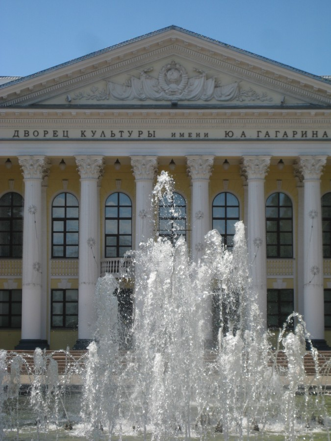

О нас
Мы говорим Сергиев Посад, - подразумеваем Троице-Сергиева лавра. Такое отождествление, может быть, и оправдано с точки зрения туристического бизнеса, - с точки зрения концепции Золотого кольца России, - однако для краеведения эта позиция, как минимум, непродуктивна. Бывая в Сергиевом Посаде, я несколько раз пытался - и, кажется, успешно - вырваться за пределы лаврской "орбиты" (см. здесь и здесь). Сегодня, любезный читатель, представлю на твой суд нечто более радикальное. Готовя этот очерк, я сознательно избегал не только видов Троице-Сергиевой лавры, но и вообще всяких намеков на православный историко-культурный контекст - исключительно из экспериментальных соображений. Опыт получился небезынтересный...
